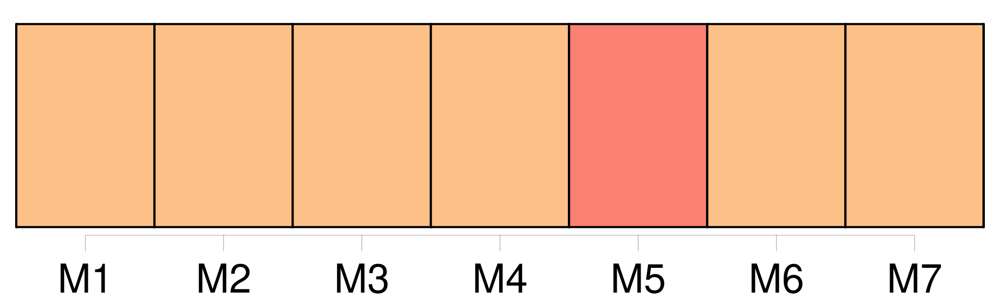
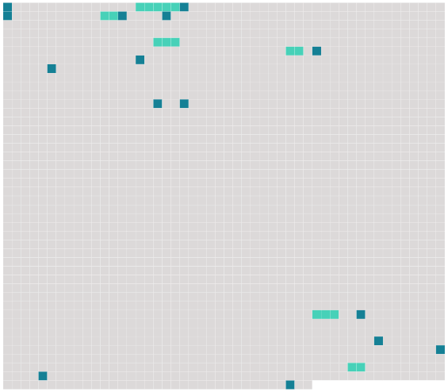

Longueur nb maillons : 21 mentions |
  |
[Elle] , la maîtresse de la maison, une vieille à cheveux blancs, mais [une de ces vieilles adorables] [dont] la peau sans rides est lisse comme un fin papier et parfumée, tout imprégnée de parfums, pénétrée jusqu'à la chair vive par les essences fines dont [elle] se baigne, depuis si longtemps, l'épiderme : [une vieille] [qui] sent, quand on [lui] baise la main, l'odeur légère qui vous saute à l'odorat lorsqu'on ouvre une boîte de poudre d'iris florentine. [5 phrases]
[La vieille femme] , avec un petit cri, se dressa comme pour fuir, tandis que lui, à coups de botte, rejetait dans la cheminée l'énorme charbon et ratissait de sa semelle toutes les éclaboussures ardentes répandues autour. Quand le désastre fut réparé, une forte odeur de roussi se répandit ; et l'homme se rasseyant en face de [son amie] , [la] regarda en souriant : « Et voilà, dit -il en montrant la bûche replacée dans l'âtre, voilà pourquoi je ne me suis jamais marié.
» [11 phrases] [Voyez] -vous, [madame] , quel que soit l'amour qui les soude l'un à l'autre, l'homme et la femme sont toujours étrangers d'âme, d'intelligence ; ils restent deux belligérants ; ils sont d'une race différente ; il faut qu'il y ait toujours on dompteur et un dompté, un maître et un esclave ; tantôt l'un, tantôt l'autre ; ils ne sont jamais deux égaux. [50 phrases] [ma chère amie] , je [vous] réponds que je ne m'amusais pas!! [12 phrases] [vous] comprenez, n'est -ce pas?? [5 phrases]
La bûche, oui, la bûche, [madame] , s'élançait dans le salon, renversant la pelle, le garde-feu, roulant comme un ouragan de flamme, incendiant le tapis et se gîtant sous un fauteuil qu'elle allait infailliblement flamber. [3 phrases]
»
Et [vous] apercevez d'ici les conséquences! [4 phrases] Cela ne doit plus [vous] étonner. |
 |
La ressource peut être téléchargée sur la page Ortolang
Si vous avez des questions ou vous voyez des erreurs, merci d'envoyer un mail à silvia.federzoni89@gmail.com
Site développé par S. Federzoni (contact)